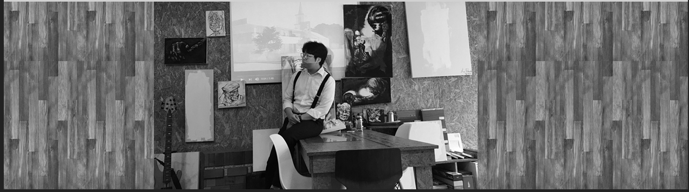
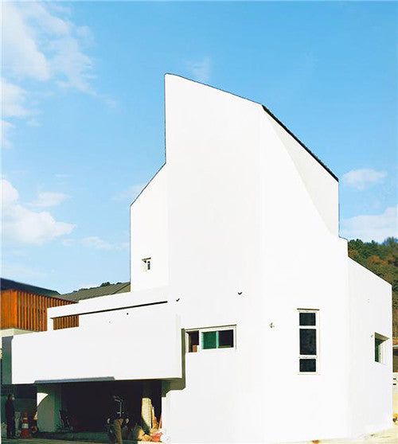

하나의 이름이 브랜드가 되는 데는 시간이 필요합니다. 우리는 아직 그 시간을 쌓는 중입니다.
2005년의 첫 도면부터 오늘의 작업실까지, 남은 것은 완성된 건물이 아니라 손에 익은 방식입니다. 해마다 하나의 장(章)을 더합니다 — 도면 하나, 그림 하나, 그리고 누군가의 하루를 조금 가볍게 만드는 도구 하나.
경사지에 앉은 단독주택. 잘린 지붕선이 남쪽 빛을 안으로 끌어들이고, 아래층 그림자는 작업 공간이 됩니다. 도판은 작품 페이지에서 이어집니다.
